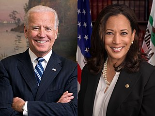

Präsidentschaftswahl in den Vereinigten Staaten 2020
-

Joe Biden und Kamala Harris
-
Donald Trump und Mike Pence
Die Präsidentschaftswahl in den Vereinigten Staaten 2020 am 3. November (Volkswahl der Delegierten zum Electoral College) und 14. Dezember 2020 (eigentliche Wahl) war die 59. Wahl zum Präsidenten und Vizepräsidenten der Vereinigten Staaten. Sie war Teil der Wahlen in den Vereinigten Staaten 2020, bei denen unter anderem auch das Repräsentantenhaus und etwa ein Drittel des Senats (33 von 100 Sitzen regulär, sowie eine Sonderwahl in Arizona und eine in Georgia) gewählt wurden. [...] Es war die erste Präsidentschaftswahl, in der die Bewerber der beiden großen Parteien älter als 70 Jahre sind: Auf Seiten der Republikaner meldete der amtierende 45. Präsident Donald Trump (zum Zeitpunkt der Wahl 2020 74 Jahre) bereits am Tag seiner Amtseinführung im Jahr 2017 die Kandidatur für 2020 an. Die wenigen Konkurrenten in den Vorwahlen fanden keine nennenswerte Unterstützung, sodass Trump am 17. März 2020 eine Mehrheit der Parteitagsdelegierten erreichte und daraufhin im August 2020 als Kandidat der Republikaner bestätigt wurde. Er trat erneut mit seinem Vizepräsidenten Mike Pence an. Bei den Demokraten gab es ein großes Bewerberfeld. Weit mehr als zwanzig bedeutende Politiker kandidierten. Das Bewerberfeld konzentrierte sich nach den ersten Vorwahlen auf den Senator Bernie Sanders und den ehemaligen Vizepräsidenten Joe Biden. Seit Sanders im April 2020 aufgab, war der zum Zeitpunkt der Wahl 77-jährige Biden der designierte Kandidat der Demokraten, ehe er auf dem Parteitag der Demokraten im August 2020 (Democratic National Convention 2020) offiziell zum Präsidentschaftskandidaten der Demokraten ernannt wurde. Für das Vizepräsidentenamt wählte er die Politikerin und Juristin Kamala Harris (Quelle: Wikipedia).
Wahlergebnis
Ein eindeutiges Ergebnis stand am Wahltag noch nicht fest, da sich die Auszählung der Stimmen, auch aufgrund der großen Beteiligung per Briefwahl, in einigen Staaten mehrere Tage hinzog. Erst am 7. November 2020 erklärten US-Medien auf der Basis vorläufiger Daten übereinstimmend, dass Biden die Wahl gewonnen habe. Trump verkündete (als erster Amtsinhaber in der Geschichte der USA), dieses Ergebnis nicht anzuerkennen, und kündigte rechtliche Schritte an. Er behauptete wiederholt, die Wahl sei manipuliert worden, um ihm die Präsidentschaft zu „stehlen“, konnte für diesen Vorwurf jedoch zu keinem Zeitpunkt konkrete Beweise liefern. Sowohl offizielle amerikanische Stellen als auch unabhängige internationale Beobachter konnten keine Hinweise auf Wahlbetrug feststellen. Trumps Klagen wurden weitgehend abgewiesen (Quelle: Wikipedia).
| Joe Biden / Kamala Harris | Donald Trump / Mike Pence | |
|---|---|---|
| Wahlleute | 306 | 232 |
| Stimmen | 81.268.924 | 74.216.154 |
| Prozent | 51,3 % | 46,9 % |
Die Wahlbeteiligung lag bei 66,3 % - etwa 158,54 Millionen der 239,25 Millionen Wahlberechtigten gaben ihre Stimme ab. Im Vergleich zu 2016 stieg sie von 59,2 % um 7,1 Prozentpunkte und erreichte den höchsten Prozentualwert seit der US-Präsidentschaftswahl 1900 (Quelle: Wikipedia).